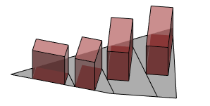

innerRect operation
Syntax
innerRect()
Description
The innerRect operation is deprecated. Use innerRectangle operation instead.
The innerRect operation finds for each face of the current shape's geometry the largest rectangle with sides parallel to the scope's x- and y-axes which is fully inside the face.
Related
Examples
Inner Rectangles of Lot Shapes
 |
Lot-->
innerRect
color("#ff0000")
set(material.color.a, 0.3)
extrude(20)
This example shows how to use innerRect() to place mass volumes in lots. |
Copyright ©2008-2023 Esri R&D Center Zurich. All rights reserved.